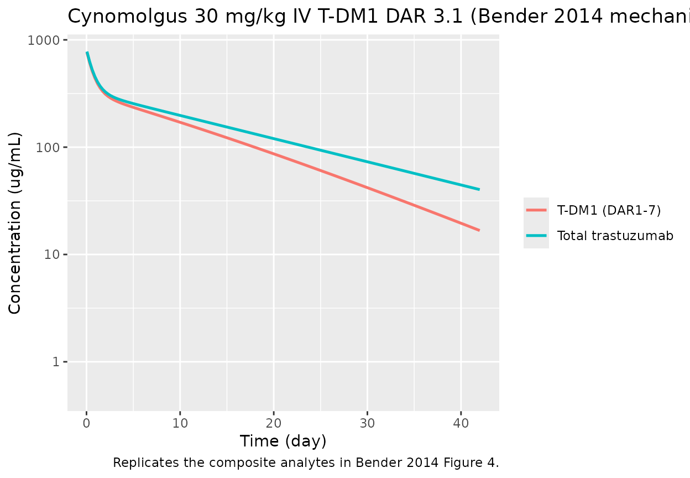
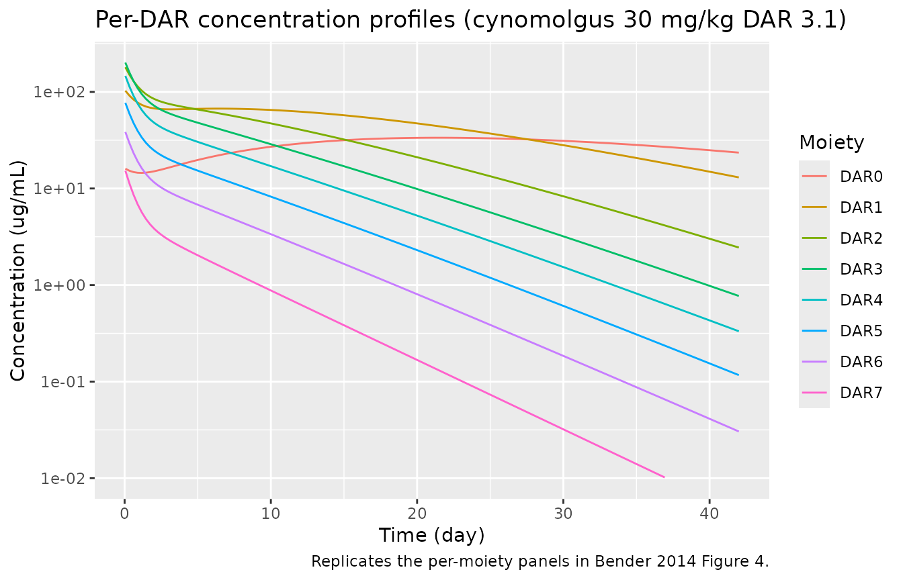

Trastuzumab emtansine (T-DM1) preclinical mechanistic DAR PK model (Bender 2014)
Source:vignettes/articles/Bender_2014_trastuzumabEmtansine_mechanistic.Rmd
Bender_2014_trastuzumabEmtansine_mechanistic.Rmd
library(nlmixr2lib)
library(rxode2)
#> rxode2 5.0.2 using 2 threads (see ?getRxThreads)
#> no cache: create with `rxCreateCache()`
library(dplyr)
#>
#> Attaching package: 'dplyr'
#> The following objects are masked from 'package:stats':
#>
#> filter, lag
#> The following objects are masked from 'package:base':
#>
#> intersect, setdiff, setequal, union
library(ggplot2)
library(tidyr)Overview
This vignette exercises the mechanistic model
(Bender 2014 Table II), which tracks each drug-to-antibody-ratio moiety
DAR0, DAR1, …, DAR7 individually. Each moiety has its own
three-compartment distribution that shares the central volume
V1, peripheral volumes V2/V3, and
distributional clearances CLd2/CLd3 with every
other DAR species. A first-order deconjugation chain carries DAR_n
toward DAR_(n-1) at rates
-
k_7->6 = k_6->5 = k_5->4 = k_4->3 = k_3->2— a single shared upper-chain rate estimated in both species (k_7->3in the model file); -
k_2->1andk_1->0— two separate first-order rate constants.
See the companion
Bender_2014_trastuzumabEmtansine_reduced model / vignette
for the simpler two-species (T-DM1 + DAR0) lumping (Bender 2014 Table
III).
Scope and species
Cynomolgus monkey estimates populate the default ini()
block. The rat parameter set is documented in the model’s
population$species_parameters metadata and in the
model-file comments.
mod <- rxode2::rxode(readModelDb("Bender_2014_trastuzumabEmtansine_mechanistic"))
#> ℹ parameter labels from comments will be replaced by 'label()'
str(mod$meta$population$species_parameters, max.level = 2)
#> List of 2
#> $ cynomolgus:List of 12
#> ..$ source : chr "Bender 2014 Table II, cynomolgus columns"
#> ..$ CL_TT : chr "17.4 mL/day (IIV CV 24.8%)"
#> ..$ k_plasma: chr "0.0939 /day"
#> ..$ V1 : chr "148 mL (IIV CV 11.7%)"
#> ..$ CLd2 : chr "25.5 mL/day (no IIV)"
#> ..$ V2 : chr "57.2 mL (IIV CV 46.8%)"
#> ..$ CLd3 : chr "81.2 mL/day (no IIV)"
#> ..$ V3 : chr "127 mL (no IIV)"
#> ..$ k_7_to_3: chr "0.341 /day (no IIV) [shared k_7->6 = k_6->5 = k_5->4 = k_4->3 = k_3->2]"
#> ..$ k_2_to_1: chr "0.255 /day (no IIV)"
#> ..$ k_1_to_0: chr "0.0939 /day (no IIV)"
#> ..$ res_err : chr "15.3% proportional"
#> $ rat :List of 13
#> ..$ source : chr "Bender 2014 Table II, rat columns"
#> ..$ CL_TT : chr "2.42 mL/day (IIV CV 24.0%)"
#> ..$ k_plasma: chr "0.156 /day"
#> ..$ V1 : chr "11.0 mL (IIV CV 18.5%)"
#> ..$ CLd2 : chr "49.0 mL/day (no IIV)"
#> ..$ V2 : chr "3.44 mL (IIV CV 49.4%)"
#> ..$ CLd3 : chr "12.0 mL/day (no IIV)"
#> ..$ V3 : chr "16.7 mL (IIV CV 16.8%)"
#> ..$ k_7_to_3: chr "0.543 /day (IIV CV 21.8%)"
#> ..$ k_2_to_1: chr "0.388 /day (no IIV)"
#> ..$ k_1_to_0: chr "0.114 /day (IIV CV 15.1%)"
#> ..$ res_err : chr "11.1% proportional"
#> ..$ notes : chr "Rat fit has additional IIV terms on V3, k_7->3, and k_1->0 not active in the cynomolgus default. To switch to r"| __truncated__
str(mod$meta$population$dose_products, max.level = 2)
#> List of 3
#> $ note : chr "Paper reports two preclinical dose products. The DAR-specific fractions below are seeded into the DAR0_central."| __truncated__
#> $ T_DM1_DAR3_1:List of 8
#> ..$ DAR7: num 0.02
#> ..$ DAR6: num 0.05
#> ..$ DAR5: num 0.1
#> ..$ DAR4: num 0.19
#> ..$ DAR3: num 0.26
#> ..$ DAR2: num 0.23
#> ..$ DAR1: num 0.13
#> ..$ DAR0: num 0.02
#> $ T_DM1_DAR1_5:List of 8
#> ..$ DAR7: num 0
#> ..$ DAR6: num 0
#> ..$ DAR5: num 0.01
#> ..$ DAR4: num 0.04
#> ..$ DAR3: num 0.13
#> ..$ DAR2: num 0.26
#> ..$ DAR1: num 0.35
#> ..$ DAR0: num 0.21Source trace
Every ini() value in
inst/modeldb/specificDrugs/Bender_2014_trastuzumabEmtansine_mechanistic.R
comes from Bender 2014 (doi:10.1208/s12248-014-9618-3)
Table II:
| Parameter | Cynomolgus | Rat | Notes |
|---|---|---|---|
CL_TT |
17.4 mL/day (CV 24.8%) | 2.42 mL/day (CV 24.0%) | Table II |
k_plasma |
0.0939 /day | 0.156 /day | Table II |
V1 |
148 mL (CV 11.7%) | 11.0 mL (CV 18.5%) | Table II |
CLd2 |
25.5 mL/day | 49.0 mL/day | Table II |
V2 |
57.2 mL (CV 46.8%) | 3.44 mL (CV 49.4%) | Table II |
CLd3 |
81.2 mL/day | 12.0 mL/day | Table II |
V3 |
127 mL | 16.7 mL (CV 16.8%) | Table II |
k_7->3 |
0.341 /day | 0.543 /day (CV 21.8%) | Shared rate |
k_2->1 |
0.255 /day | 0.388 /day | Table II |
k_1->0 |
0.0939 /day | 0.114 /day (CV 15.1%) | Table II |
| Residual | 15.3% proportional | 11.1% proportional | Table II |
Cynomolgus 30 mg/kg IV T-DM1 DAR 3.1 replication
Bender 2014 Figure 4 (cynomolgus panel) shows TT and per-DAR
concentration profiles after a single 30 mg/kg IV T-DM1 DAR 3.1 dose.
Simulating the mechanistic model requires seeding each
dar*_central compartment with the DAR-3.1 dose-product
fraction multiplied by the total dose amount.
dose_mg <- 120 # 30 mg/kg * 4 kg body weight
dar_fracs <- list(
dar7_central = 0.02, dar6_central = 0.05,
dar5_central = 0.10, dar4_central = 0.19,
dar3_central = 0.26, dar2_central = 0.23,
dar1_central = 0.13, dar0_central = 0.02
)
events <- rxode2::et()
for (cmt in names(dar_fracs)) {
events <- rxode2::et(events,
amt = dose_mg * dar_fracs[[cmt]],
cmt = cmt, time = 0)
}
events <- rxode2::et(events, seq(0.05, 42, length.out = 150), cmt = "Cc")
sim <- rxode2::rxSolve(mod |> rxode2::zeroRe(), events = events)
#> ℹ omega/sigma items treated as zero: 'etalcl', 'etalvc', 'etalvp'
sim_long <- as.data.frame(sim) |>
pivot_longer(c(Cc, Ctt), names_to = "analyte", values_to = "conc") |>
mutate(analyte = recode(analyte,
Cc = "T-DM1 (DAR1-7)",
Ctt = "Total trastuzumab"))
ggplot(sim_long, aes(time, conc, colour = analyte)) +
geom_line(size = 0.9) +
scale_y_log10(limits = c(0.5, NA)) +
labs(x = "Time (day)", y = "Concentration (ug/mL)",
colour = NULL,
title = "Cynomolgus 30 mg/kg IV T-DM1 DAR 3.1 (Bender 2014 mechanistic)",
caption = "Replicates the composite analytes in Bender 2014 Figure 4.")
#> Warning: Using `size` aesthetic for lines was deprecated in ggplot2 3.4.0.
#> ℹ Please use `linewidth` instead.
#> This warning is displayed once per session.
#> Call `lifecycle::last_lifecycle_warnings()` to see where this warning was
#> generated.
dar_cols <- paste0("Cc_dar", 0:7)
sim_dar <- as.data.frame(sim) |>
select(time, all_of(dar_cols)) |>
pivot_longer(-time, names_to = "moiety", values_to = "conc") |>
mutate(moiety = factor(moiety, levels = dar_cols, labels = paste0("DAR", 0:7)))
ggplot(sim_dar, aes(time, conc, colour = moiety)) +
geom_line() +
scale_y_log10(limits = c(0.01, NA)) +
labs(x = "Time (day)", y = "Concentration (ug/mL)",
colour = "Moiety",
title = "Per-DAR concentration profiles (cynomolgus 30 mg/kg DAR 3.1)",
caption = "Replicates the per-moiety panels in Bender 2014 Figure 4.")
#> Warning: Removed 18 rows containing missing values or values outside the scale range
#> (`geom_line()`).
The per-DAR profiles reproduce the expected qualitative features from the paper: DAR7 and DAR6 decline monotonically (no higher species feed them); DAR3–DAR5 peak early and decay; DAR1 and DAR0 build up over time as they are fed by deconjugation from the higher moieties.
Assumptions and deviations
- Cynomolgus body weight fixed at 4 kg to convert paper’s mg/kg doses
to absolute mg; the model treats volumes as absolute (mL in the paper, L
in the
ini()block). - Residual error applied to
Cc(T-DM1) andCtt(TT) only; per-DAR concentrations are exposed as deterministic derived outputs (Cc_dar0…Cc_dar7) for VPC-style comparison. - The model’s
k_plasmaparameter is retained for future in-vitro plasma stability simulations, even though in the in-vivo ODE the sumCL_in_vivo/V1 + k_plasmasimplifies toCL_TT/V1.